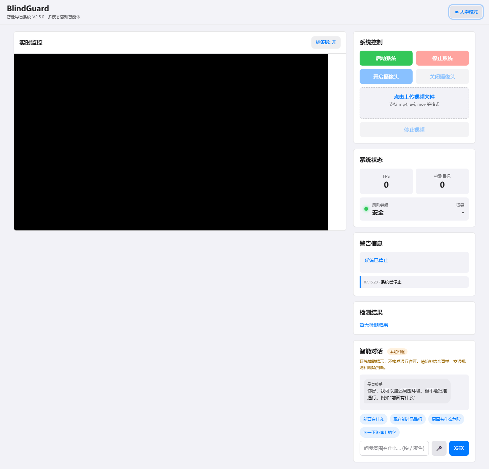
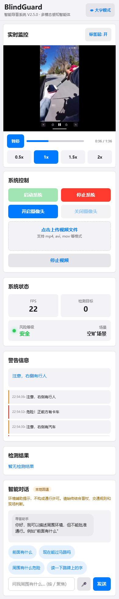
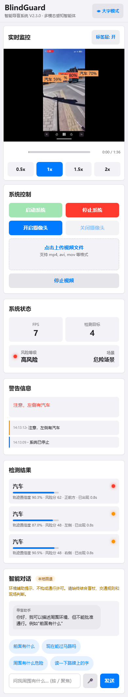
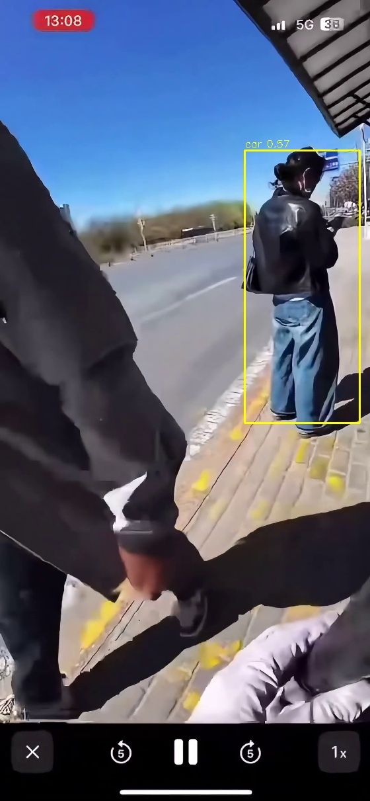

主动式多模态导盲感知智能体
双模型检测 · 实时风险 · 红绿灯识别 · 工具编排 · 确定性安全护栏
BlindGuard 是为视障人士设计的主动式导盲辅助系统，不同于 Seeing AI 等被动拍照模式。系统持续感知环境，按风险等级主动播报预警，针对中国道路定制了井盖、盲道等通用模型不识别的类别。
检测在独立管线线程中单实例运行，多浏览器客户端共享最新标注帧。
本地意图路由 + LLM 角色规划 + 有界工具编排 + 确定性安全守门员。规则没认出的请求由模型做任务分解（只决定角色、不决定工具），LLM 负责理解与表达，通行授权由安全层拒绝。
RTX 5060 Laptop GPU 双模型配置（best_s.pt + best.pt，主960px + 辅640px，竖屏裁剪）。
| 阶段 | 性能细节 |
|---|---|
| 管线端到端 | 均值 25.8ms / 中位 22.5ms / P95 27.5ms |
| 管线+JPEG编码 | 均值 29.9ms / 中位 26.5ms / P95 32.1ms |
| 安全护栏 | 红灯/黄灯/未知绕过LLM，绿灯不授权；危险回复拦截替换 |
| Agent 工具循环 | 在线 deepseek-chat 实测 12/12 通过（工具协议、工具闭环、安全护栏、角色执行、权限策略、轨迹准确性） |
| 在线 LLM | DeepSeek deepseek-chat 已接入并实测 HTTP 200；断网自动回退本地模板 |



